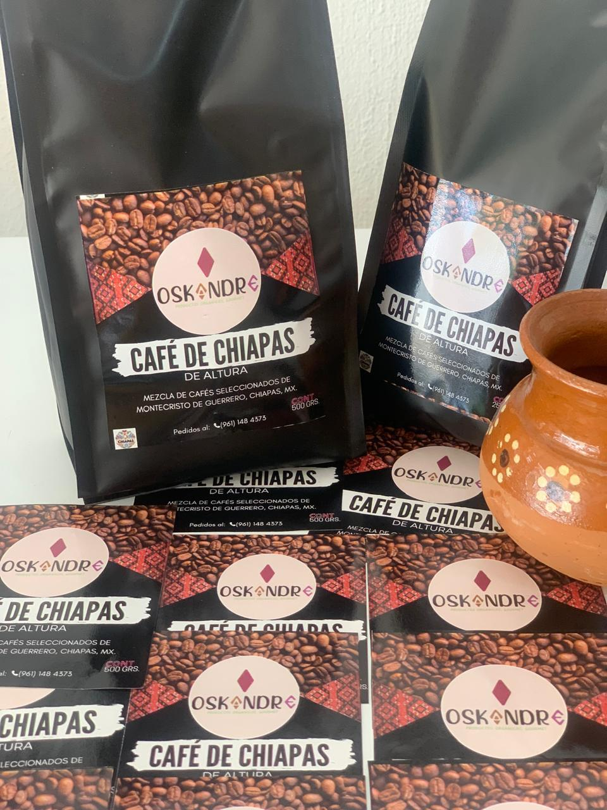

Productos
Café artesanal, cerveza de raíz y más bebidas únicas de la casa.

Café de Chiapas 1/2 kilo - $150
Café de Chiapas 1/4 kilo - $80
Cerveza de Raíz 1 litro - $140

Cerveza de Raíz 1/2 litro - $75
Café y Cerveza de Raíz
Bienvenido a Oskandre, donde combinamos el sabor tradicional del café con la frescura única de la cerveza de raíz. Productos hechos con pasión, calidad y un toque especial.
Café artesanal, cerveza de raíz y más bebidas únicas de la casa.